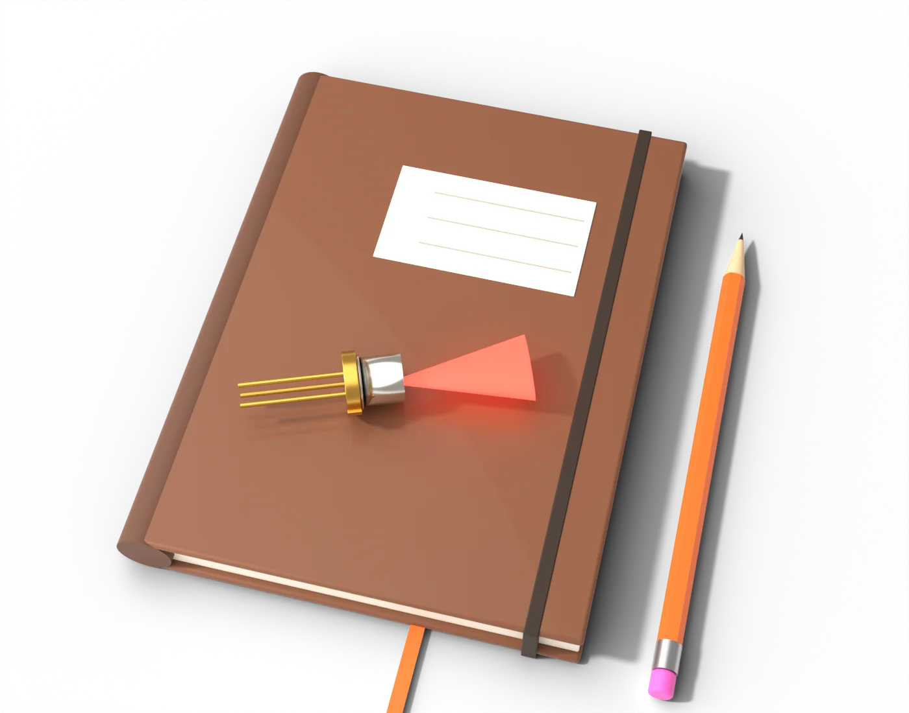

mon carnet
de photonique
bienvenue au labo,
une bibliothèque pour comprendre le laser pour de vrai ! De la physique de la lumière aux amplificateurs à fibre, de la source de courant au dépannage — jusqu'au banc de test que tu vas construire et programmer toi-même en Python.
49 leçons · 1 projet complet · 7 modèles 3D · ta progression et tes notes restent dans ce navigateur.

le parcours
7 modules, du crayon au banc de testChaque leçon mélange explications, schémas, simulations à manipuler, modèles 3D, quiz et un encadré « sur le terrain » pour le métier de technicien. Les modules 01 et 02 sont les fondations : ne les saute pas, même si tu crois les connaître 😉
les outils du carnet
pour réviser toute ta carrièremes cours BUT3
maths · physique · maintenanceTes pages de révision du semestre 5, rangées au même endroit que le reste.
comment travailler avec ce carnet
- Lis en manipulant : chaque simulation répond à une question — joue avec les curseurs jusqu'à pouvoir prédire le résultat.
- Note avec tes mots : le bouton « prendre des notes » ouvre une page lignée ; sélectionne un passage pour le citer.
- Teste-toi : un quiz réussi passe la leçon en « compris » ; les fiches de révision reviennent au bon moment.
- Construis : le module 07 te guide pour fabriquer et coder ton banc. Le code, c'est toi qui l'écris.
pourquoi ce carnet ?
Les métiers de technicien en photonique — production et test de lasers accordables, d'amplificateurs à fibre, intégration, SAV — demandent de relier physique, électronique, mesure et méthode. Ce carnet relie tout ça, avec un seul fil rouge : savoir mesurer un laser, comprendre ce qu'on mesure, et réparer ce qui ne va pas.
Tes données (notes, progression) ne quittent jamais ton navigateur. Pense à exporter une sauvegarde depuis mon carnet.